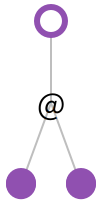
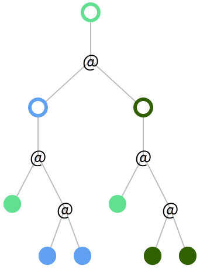
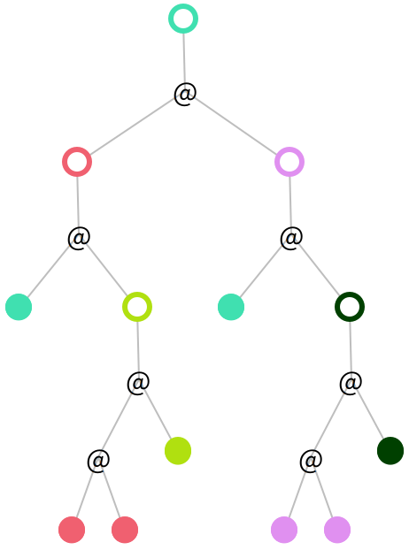
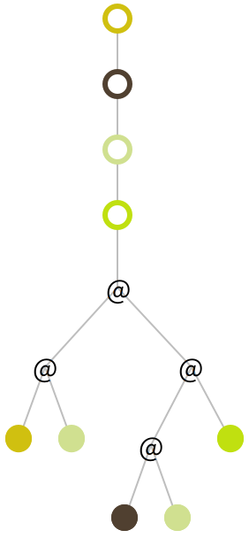

7.2
Visualize λ
Code: visualize-λ
Bound variables are displayed as circles. And variable use are displayed as disks. @ means application.
Omega combinatior
(λ (x) (x x))

Y combinator
(λ (f) ((λ (x) (f (x x))) (λ (x) (f (x x)))))

Z combinator
(λ (f) ((λ (x) (f (λ (v) ((x x) v)))) (λ (x) (f (λ (v) ((x x) v))))))

Plus in Church encoding
(λ (m) (λ (n) (λ (f) (λ (x) ((m f) ((n f) x))))))
